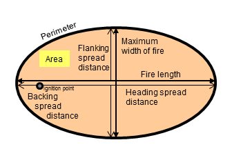

|
Surface Fire Area or Fire Size at Report |
These two variables (surface fire area and fire size at report) are the same thing. It is calculated as the area of a surface fire that started from a point source and assumes the fire has an elliptical shape. Calculation of surface fire area is based on maximum surface fire rate of spread, effective wind speed, and elapsed time.
To avoid confusion, the variable is called surface fire area when it is an output from the SIZE module. It is called fire size at report when it is an input to the CONTAIN module. Crown fire area can be calculated in the CROWN module. The CONTAIN module should not be used for crown fires.
| I/O | Module | If | Notes |
| Input | CONTAIN | If SIZE is not also selected | Labeled Fire Size at Report |
| Output | SIZE | Labeled Surface Fire Area |
|  |
BehavePlus, the old BEHAVE, and FARSITE use a simple ellipse model to characterize fire size and shape. The fire's shape is dependent on the effective wind speed. (Anderson (1983) developed double ellipse-based equations to describe fire shape).